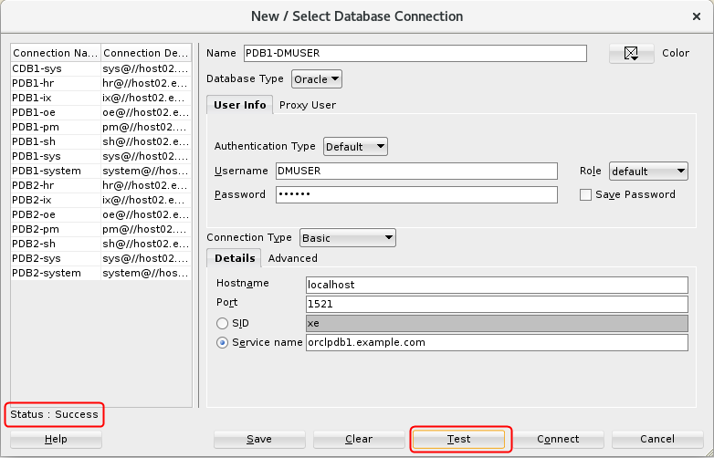

Create
a SQL Developer User Account
Create
a SQL Developer User Account Before You Begin
Before You Begin
This 15-minute tutorial shows you how to create a Data Miner user account and SQL Developer connection using a pluggable database (PDB).
Background
Oracle SQL Developer is a client to the Oracle Database software. An Oracle SQL Developer user account is required to access Oracle database tables and use Oracle Data Miner.
What Do You Need?
- Oracle Database 19c Enterprise Edition
- Oracle SQL Developer version 19.x
 Create
a User Account in a Pluggable Database
Create
a User Account in a Pluggable Database
Your Oracle Database 19c instance should have at least one pluggable database (PDB) instance. You will use an account with the proper permissions to create a user account for your Data Miner user account.
Note: If you are using an Oracle Database instance in your corporate environment, you may need to request your DBA to perform these actions.
- Open SQL Developer.
- Right-click your PDB sys user account and select Connect.
- In the SQL Developer Connections tab, expand the connection.
- Right-click the Other Users node and select Create User from the pop-up menu.
- In the Create User window, select the User
tab and specify a username, password, default tablespace, and
temporary tablespace for the user account. Use the following
parameters:
- User Name: DMUSER
Note: You must use an upper case user name.
- Password: Create a password of your choice (it must be at least 9 characters and contain two upper case characters.)
- User Name: DMUSER
- Select the Granted Roles tab and click the check box in the Granted Column for CONNECT.
- Select the Quotas tab and click the check box to set the default USERS Tablespace to Unlimited.
- Click Apply to create the account. Then, click OK in the resulting "Successful" window.
 Create
a SQL Developer Connection for the Data Miner User
Create
a SQL Developer Connection for the Data Miner User
You can create this connection either by using the SQL Developer Connections tab or the Data Miner tab. In either case, the same New / Edit Database Connection dialog box appears. All saved SQL Developer connections appears in both tabs.
- In the SQL Developer Connections tab, right-click Connections and select New Connection from the pop-up menu.
- In the New / Select Database Connection dialog box, enter
the following parameters:
- Connection Name: PDB1-DMUSER
- Password: your chosen password
- Check Save Password
- Connection Type: Basic
- Hostname: The host name of your database server (localhost if the database is installed on your PC, or the IP address if it is remote)
- Port: Enter the appropriate port number (1521 is the default)
- Service name: The service name for your PDB, such as orclpdb1.example.com
- Click Test to test the connection. If the
connection is successful, Status (just above the Help button)
changes to "Success". Then, click Connect to
save the connection and to also establish a connection to the
database.

Description of the illustration create-dmuser-connection.png
 Next Tutorial
Next Tutorial
In the next tutorial, you'll install the Data Miner sample data repository.